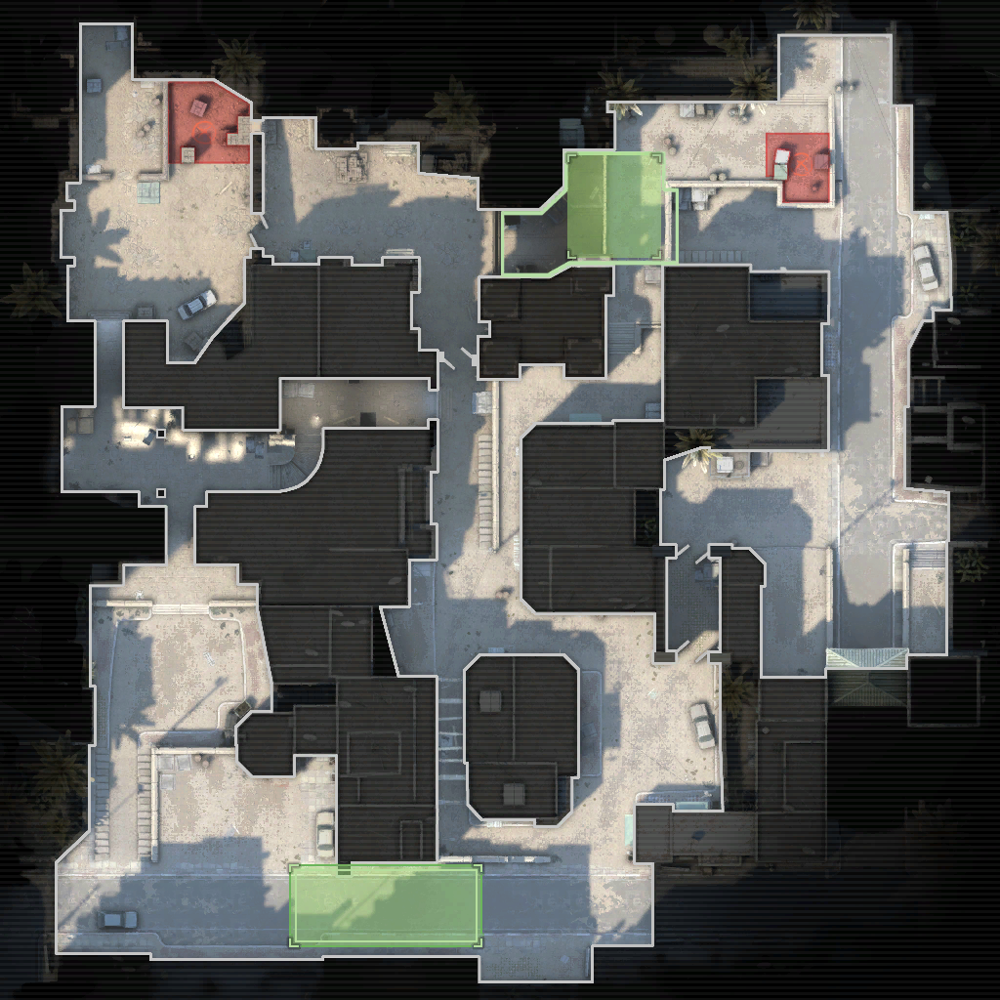
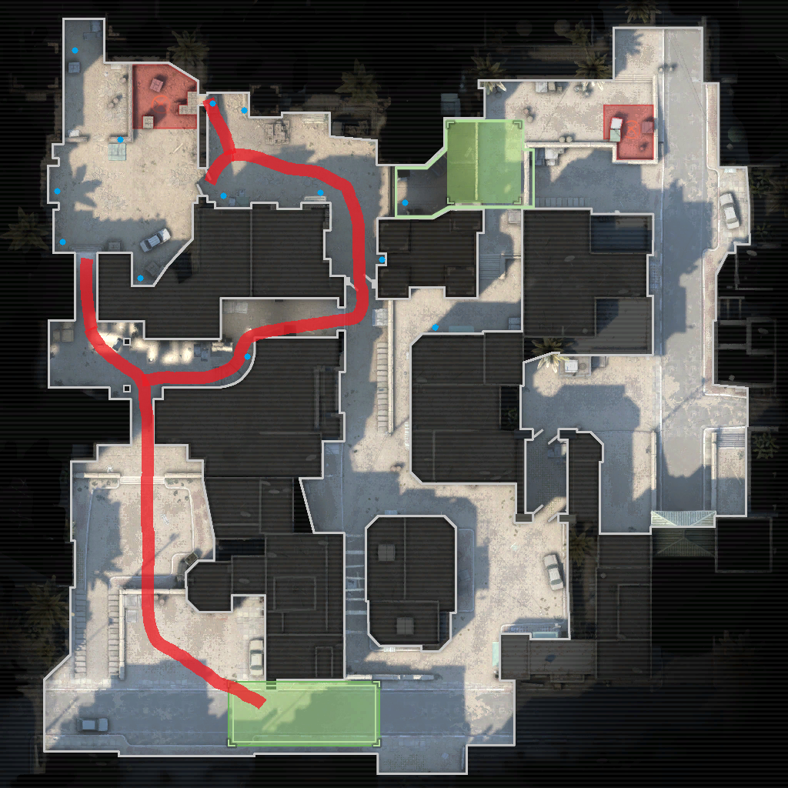
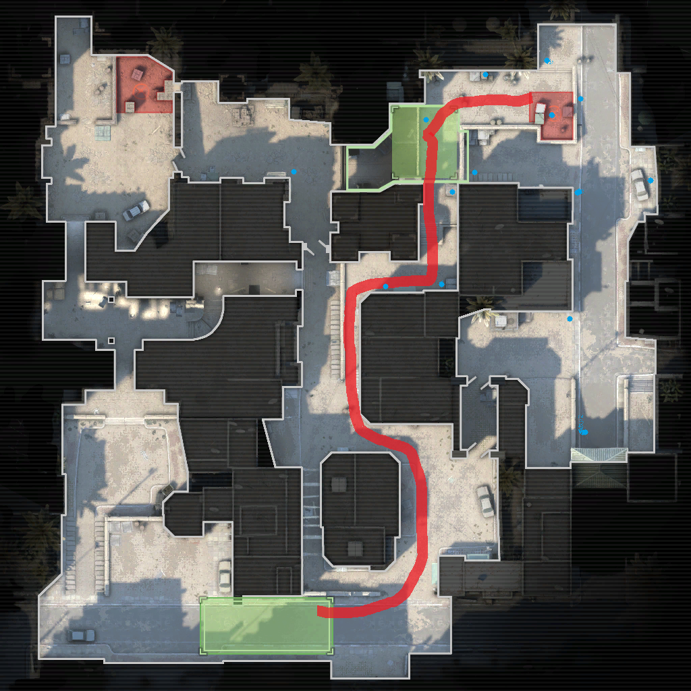
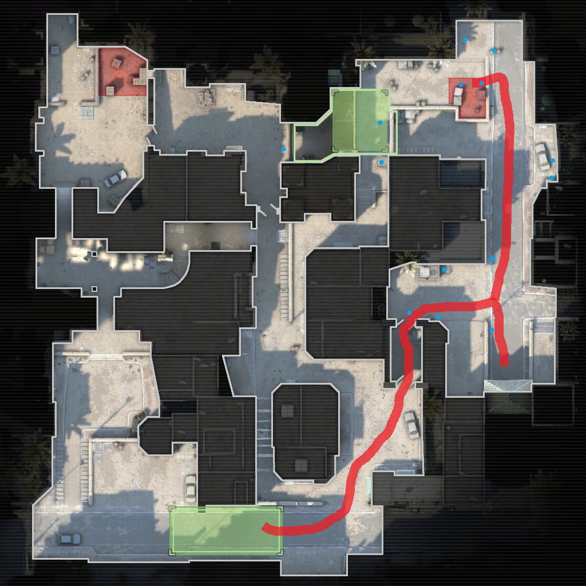
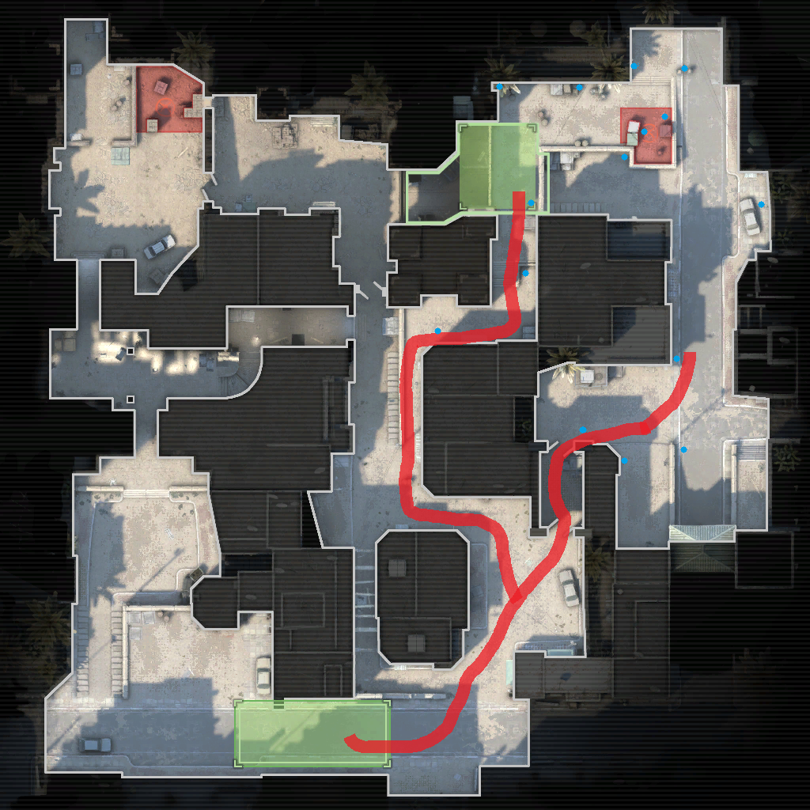

In general
When playing competitive in cs:go teamwork and a coordinated strategies are key to getting the upper hand. If your team stays together, uses voicechat to communicate enemy positions and health, and coordinates grenades the game becomes much easier. Of course a team of random players won´t normally do this so playing with friends is adviced. (The dots on the map indicate common enemy positions)
This strategie guide will be specifically for the new dust II.
B rush
The classic B rush is most often used when on an eco or in the pistol round. The are a couple of key factors for this strategie:
clearing lower tunnels, flashing the enemies, and checking corners.

B split
The B split is only viable when both teams are on an eco or when your sniper saw noone going B. It is similar to the B rush except for the players going mid as they need to smoke of ct spawn.
A short
A strategy that works on eco and buy rounds. You will have to smoke x box to get to short safely as snipers can see you easily.
A long
Going long is only adivised when your team has helmets and strong weapons as enemies can fall easily fall back or engage from long distance. You will have to use flashes and smokes before you push here otherwise you will be taken out easily.
A split
The A split is one of the best strategies for dust II as you can push A site from two sides. To pull it off you need teamwork and a decent economy as pushing at the same time can really confuse the enemy. In essence it is the same as the long and short push but with less teammates to worry about.
